区域
Ouwland 主世界分区。蓝框为 Area 碰撞范围，紫点为重生水晶，绿方为付费神庙。
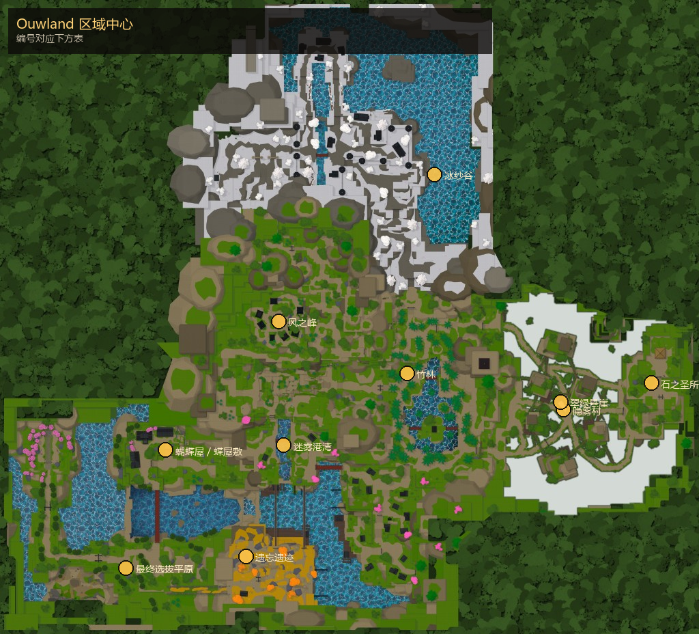
主页 / 区域
Ouwland 主世界分区。蓝框为 Area 碰撞范围，紫点为重生水晶，绿方为付费神庙。

Iceveil Valley
| 等级范围 | 100 – 125（任务标级）· 参考 70 – 110 |
|---|---|
| 特性 | 严寒谷地；钓鱼交付与高难冬区内容。 |
| 主要有什么 | 冰纱聚落水晶 · 冬店 Lynx · 雪人/冰系内容 · 鱼类交付点 |
| 刷新实体约 | 12（Regions 条目，含水晶/事件体） |
| 重生水晶 | 见子区域 / 总览图（部分水晶挂在子区） |
| 提示 | 带御寒/高伤装；渔获可交付聚落。 |
142, 1385, -2783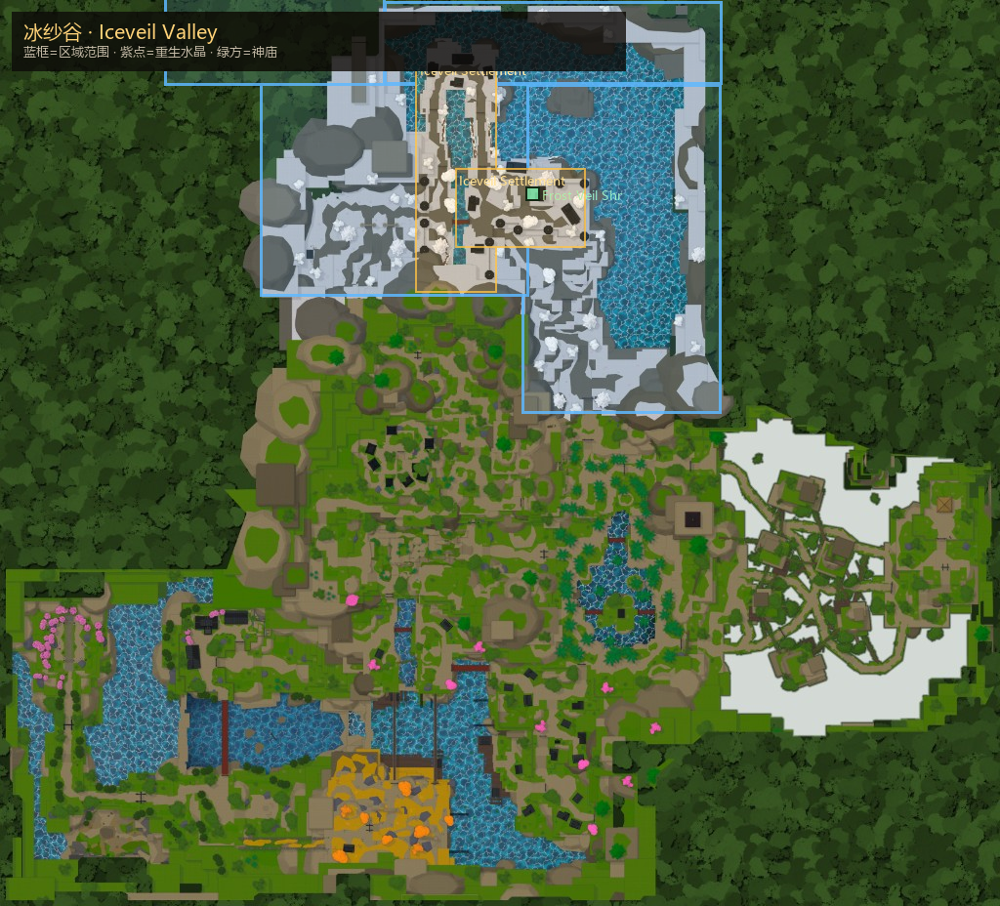
Final Selection Plains
| 等级范围 | 90 – 120+ |
|---|---|
| 特性 | 终选试炼场地；高危 Boss「遗失」与终局路线。 |
| 主要有什么 | 终选水晶 · Lost Boss · 选拔相关任务 |
| 刷新实体约 | 5（Regions 条目，含水晶/事件体） |
| 重生水晶 | 见子区域 / 总览图（部分水晶挂在子区） |
| 提示 | 组队或高配再进；掉落见遗失宝箱。 |
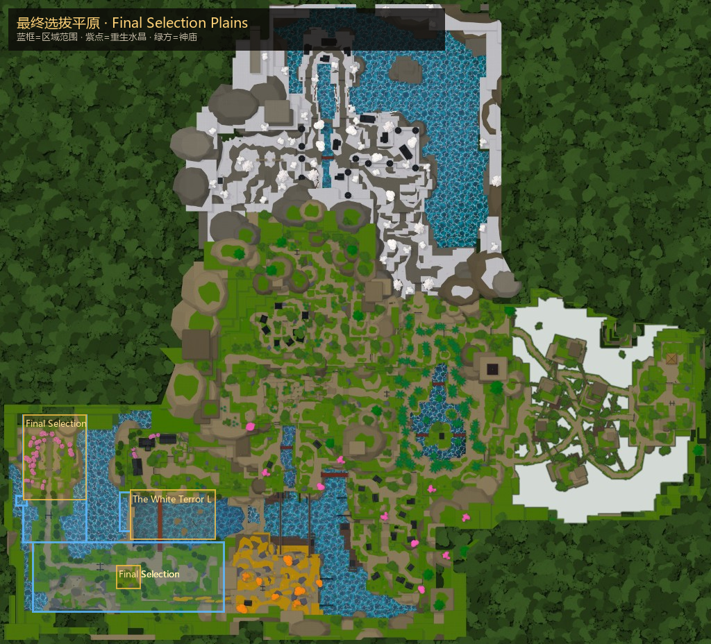
Misc
| 等级范围 | 62 – 100（任务标级）· 参考 全等级 |
|---|---|
| 特性 | 不绑固定区域的 NPC、限时商人与跨区事件。 |
| 主要有什么 | 黑商多点 · 部分导师/特殊对话 |
| 刷新实体约 | 52（Regions 条目，含水晶/事件体） |
| 重生水晶 | 见子区域 / 总览图（部分水晶挂在子区） |
| 提示 | 黑商见专题页；坐标随事件变化。 |
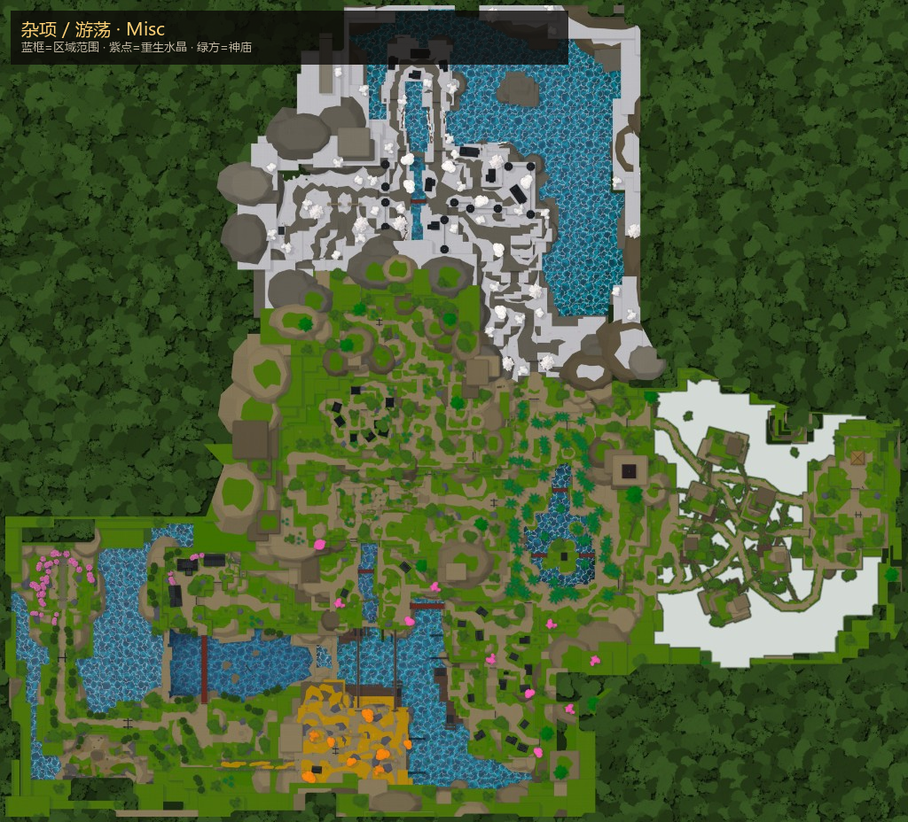
Stone Sanctuary
| 等级范围 | 50 – 80 |
|---|---|
| 特性 | 岩石圣域地貌，偏中后期探索。 |
| 主要有什么 | 区域范围 · 探索向内容 |
| 刷新实体约 | 0（Regions 条目，含水晶/事件体） |
| 重生水晶 | 见子区域 / 总览图（部分水晶挂在子区） |
| 提示 | 可与隐雾村路线衔接。 |
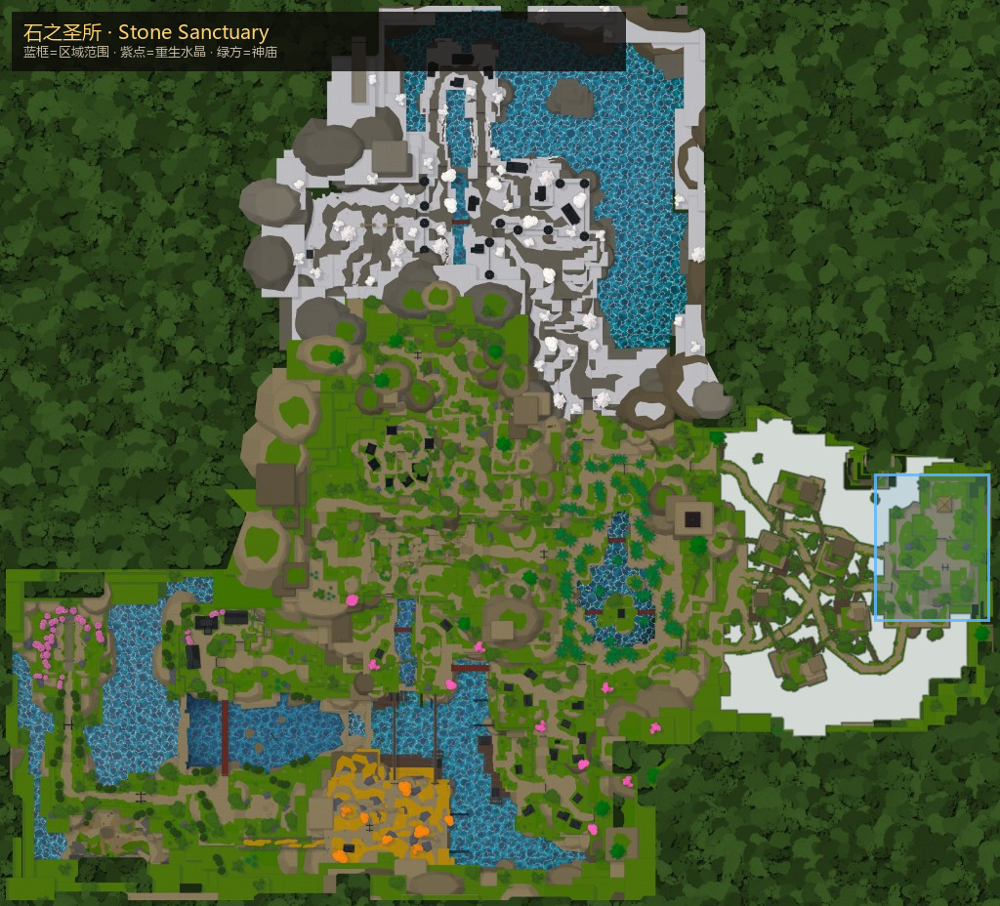
Bamboo Grove
| 等级范围 | 10 – 10（任务标级）· 参考 25 – 60 |
|---|---|
| 特性 | 竹林与圣所地貌；含子区域「竹林圣所」重生水晶。 |
| 主要有什么 | 区域任务 NPC · 竹林圣所水晶 · 中阶野怪 |
| 刷新实体约 | 11（Regions 条目，含水晶/事件体） |
| 重生水晶 | 368, 1129, -941 |
| 提示 | 适合中期刷怪与路过传送。 |
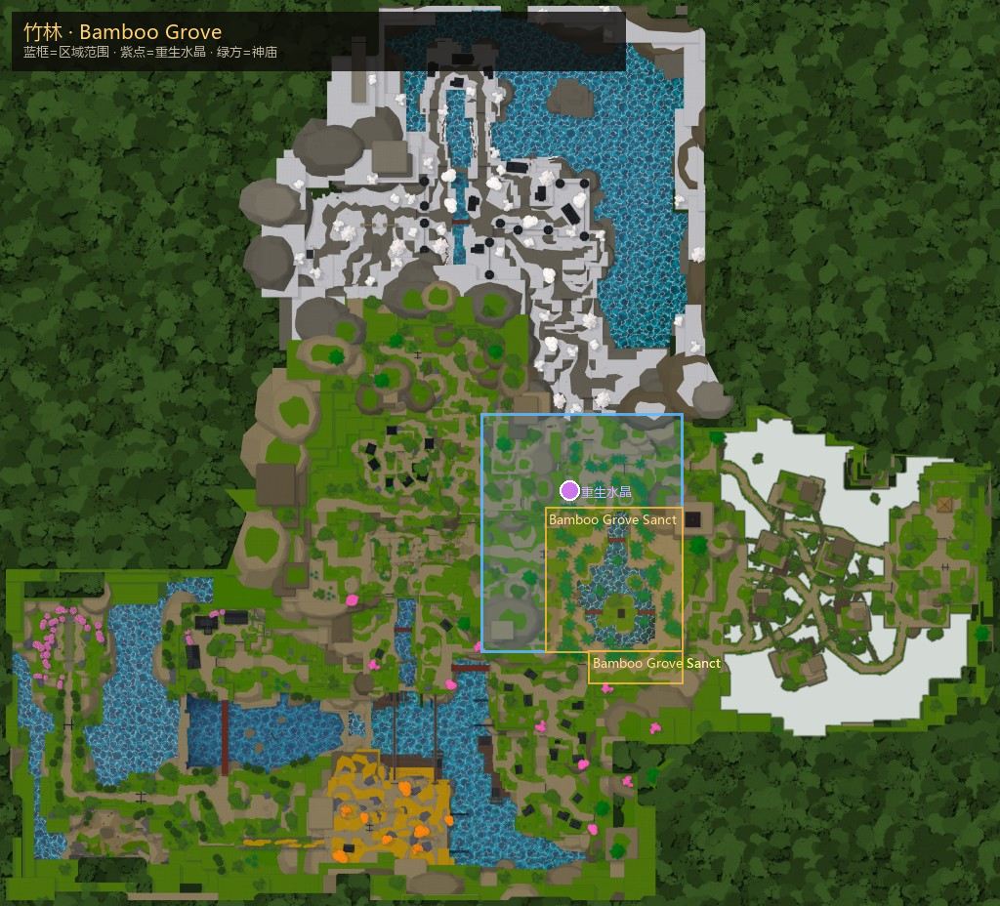
Verdant Cliffs
| 等级范围 | 30 – 65 |
|---|---|
| 特性 | 悬崖绿地过渡带，连通港湾与内陆。 |
| 主要有什么 | 区域范围标记 · 路过怪群 |
| 刷新实体约 | 0（Regions 条目，含水晶/事件体） |
| 重生水晶 | 见子区域 / 总览图（部分水晶挂在子区） |
| 提示 | 赶路时注意落差。 |
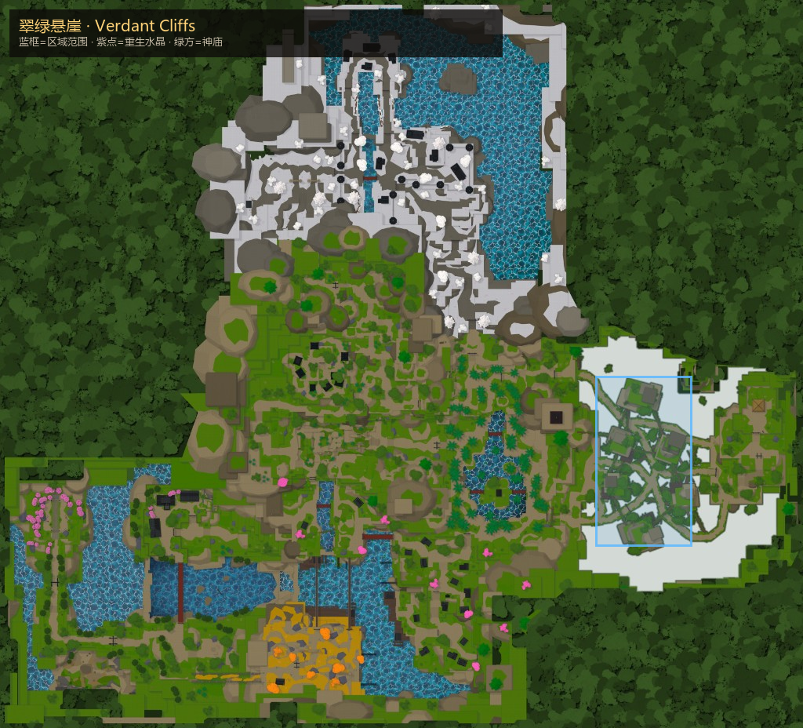
Butterfly Estate
| 等级范围 | 70 – 75（任务标级）· 参考 20 – 55 |
|---|---|
| 特性 | 鬼杀队驻地与治疗/补给核心；呼吸训练与队务任务集中。 |
| 主要有什么 | Ren 葫芦店 · 医疗任务 · 低/高阶鬼练级 · 呼吸相关导师入口 |
| 刷新实体约 | 4（Regions 条目，含水晶/事件体） |
| 重生水晶 | -1773, 315, -120 |
| 提示 | 阵营进度、回复药、队士任务中转站。 |
-1729, 315, 127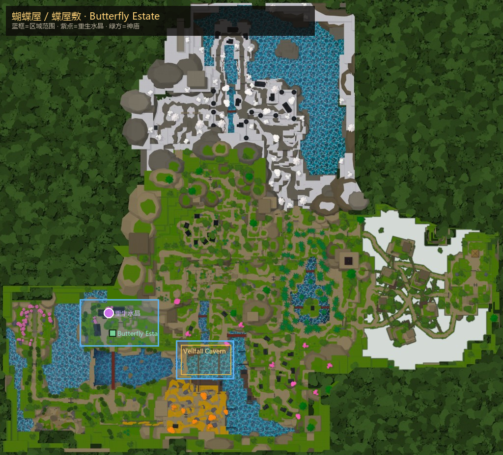
Mistfall Harbor
| 等级范围 | 45 – 70（任务标级）· 参考 1 – 35 |
|---|---|
| 特性 | 新手港镇与主线起步区；码头、渔夫、补给商店密集。 |
| 主要有什么 | 钓鱼证 Sofen · 鱼竿 Jeso · 银造 Ginzo · 野兽/血猎低阶鬼 · 码头任务 |
| 刷新实体约 | 13（Regions 条目，含水晶/事件体） |
| 重生水晶 | 137, 874, 733 |
| 提示 | 拿钓鱼证、买基础竿、清港口周边低阶怪。 |
17, 968, 372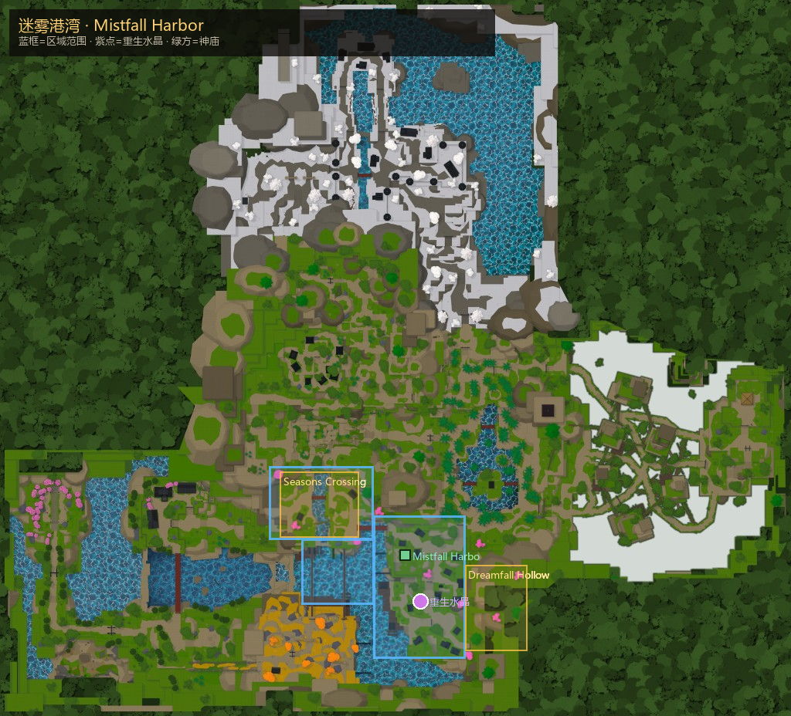
Forgotten Ruins
| 等级范围 | 55 – 90 |
|---|---|
| 特性 | 废墟探索区，战斗与搜刮并重。 |
| 主要有什么 | 遗迹范围 · 精英怪倾向 |
| 刷新实体约 | 0（Regions 条目，含水晶/事件体） |
| 重生水晶 | 见子区域 / 总览图（部分水晶挂在子区） |
| 提示 | 注意伏击与狭窄通道。 |
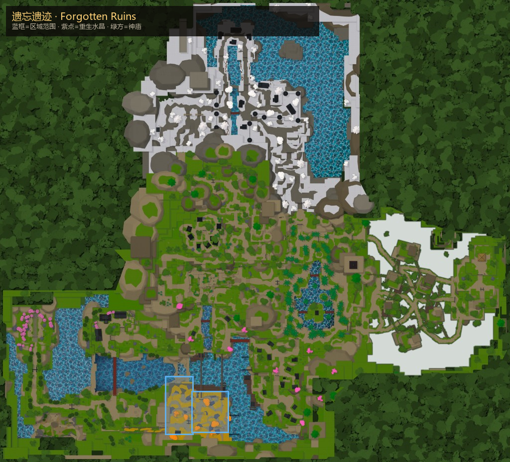
Hidden Mist Village
| 等级范围 | 45 – 85 |
|---|---|
| 特性 | 锻造 / 精炼 / 暮落装备枢纽；地势较高。 |
| 主要有什么 | 铁匠 Togane · 精炼 Hagane · 石匠 Tobei · 饵贩 Nori · 拳套雕像 |
| 刷新实体约 | 4（Regions 条目，含水晶/事件体） |
| 重生水晶 | 1640, 606, -125 |
| 提示 | 图纸锻造、精炼、暮落进度必经。 |
1266, 981, -482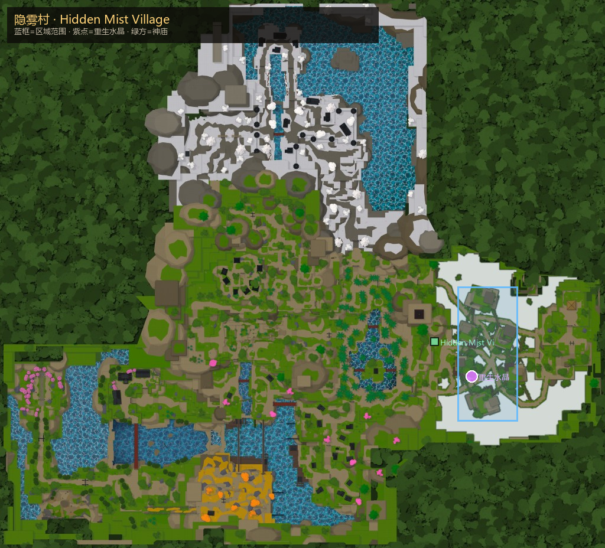
Windy Peak
| 等级范围 | 10 – 10（任务标级）· 参考 40 – 75 |
|---|---|
| 特性 | 高地风区；土匪与山路战斗点较多。 |
| 主要有什么 | 山贼刷新 · 风相关任务 · 神庙 |
| 刷新实体约 | 11（Regions 条目，含水晶/事件体） |
| 重生水晶 | -448, 1241, -919 |
| 提示 | 注意悬崖地形与群怪。 |
-409, 1250, -1312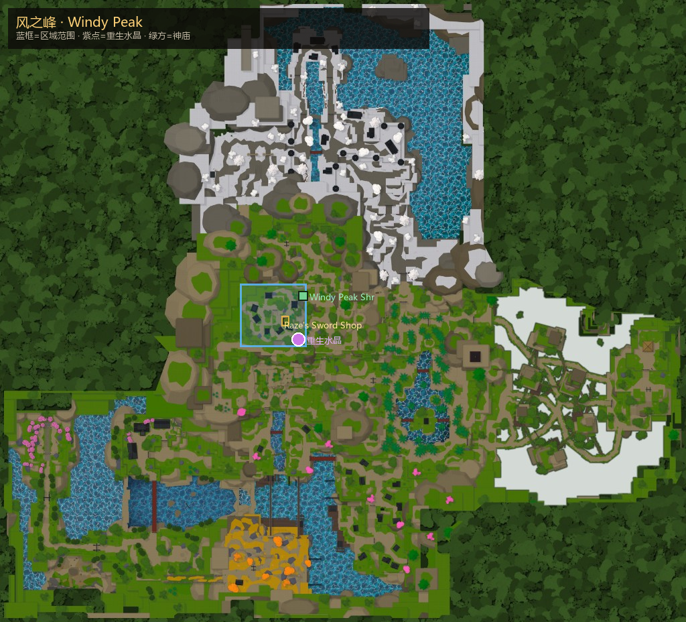